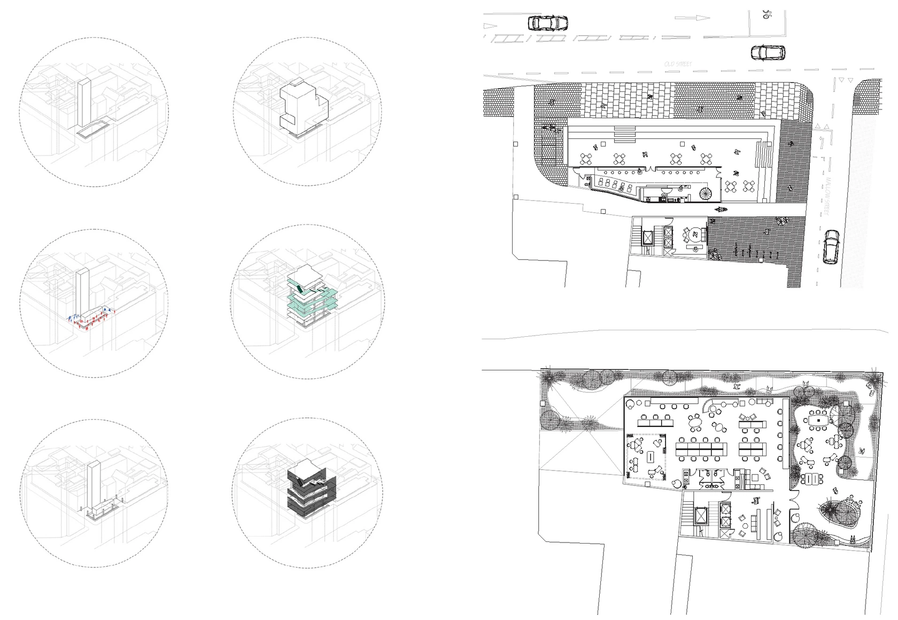

Studienprojekt · Architekturentwurf
Studio Catalyst
Der Entwurf für ein Bürogebäude auf einem ehemaligen Tankstellengrundstück an der Old Street öffnet das Erdgeschoss für die Öffentlichkeit und beleuchtet den Straßenraum nach Einbruch der Dunkelheit.

- Ort
- Old Street, London
- Kontext
- Hochschule München · Architekturentwurf
- Semester
- Wintersemester 2023/24
Die Zeichnung
Diagramme und Grundrisse machen nachvollziehbar, wie der Entwurf die Büroflächen um ein öffentlich zugängliches Erdgeschoss organisiert.

Zeichnung vergrößernDer Raum
Die Innenansicht vermittelt die Größe und Anordnung der geplanten Gemeinschaftsbereiche aus der Perspektive ihrer Nutzerinnen und Nutzer.